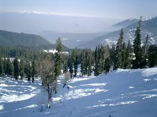
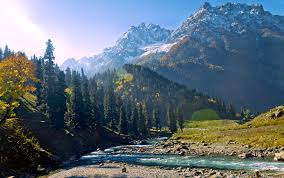
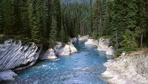
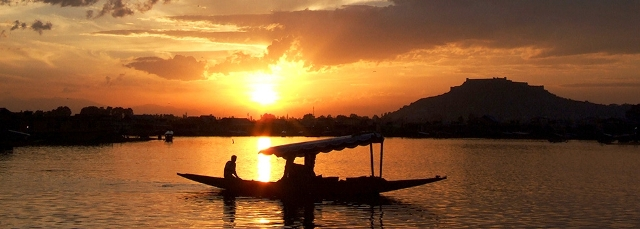

Gulmarg
Gulmarg is a town, a hill station, a popular skiing destination and a notified area committee in Baramula district in the Indian state of Jammu and Kashmir. The town is situated in the Pirpanjal range in the western the Himalayas.
Sonamarg
Sonamarg is a mesmerizing hill station in the Ganderbal district of J & K. Sonamarg literally means ‘the meadow of gold’ and with snow-capped mountains set against a spectacular blue sky, it is as close to heaven as it can get. The Sindh River flows through the valley.
Pahalgam
Pahalgam, known as the ‘Valley of Shepherds’, is a famous hill station in J & K. Standing at the confluence of Lidder river and the Sheshnag lake, Pahalgam is surrounded by thickly wooded pine forests, breathtaking vistas of meadows and the snow-clad Himalayan mountains.
Dal Lake - Srinagar
The scenic splendor of Srinagar in Jammu and Kashmir has attracted people since time immemorial. The city has mesmerized the Mauryans, the Mughals, the Sikhs and the British over the course of history. Set against the backdrop of the Himalayan mountains at a height of 1730 m on the banks of river Jhelum, Srinagar is a dream destination for many travelers.